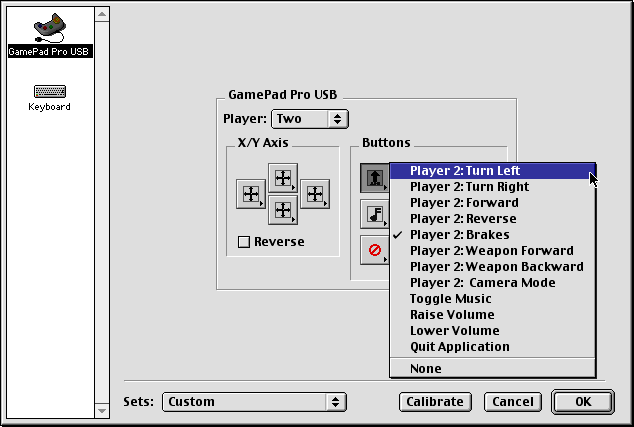

CONTROLS
CONTROLS
Cro-Mag Rally uses Input Sprocket for all I/O. By default, the game is configured for use with the keyboard, but you may modify the controls to use any input device that is Input Sprocket compatible. This includes joysticks, gamepads, steering wheels, etc.
DEFAULT KEY CONTROLS
This is the default keyboard configuration:
Up-Arrow
Player 1: Accelerate Forward
Down-Arrow
Player 1: Accelerate Backward
Spacebar
Player 1: Brakes
Left / Right Arrows
Player 1: Turn Left/Right
Apple
Player 1: Throw Weapon Forward
Option
Player 1: Throw Weapon Backward
ESC
Pause Game
~
Player 1: Change Camera Mode
F1
Game Settings
Apple-Q
Quit the application
F9/F10
Shrink / Grow Game Window
CHANGING THE CONTROLS
To get to the Input Sprocket dialog where you can configure the controls, you may press F1 at any time. Or, from the game's Menu screen simply select OPTIONS and then GAME SETTINGS.
IMPORTANT
Most Macintosh keyboards only let you press up to 3 keys at the same time. This means that in order to play the game with 2 players in split-screen mode you must use a secondary input device such as a second keyboard, a gamepad, joystick, etc.
When configuring the secondary device it is very important that you do it correctly. Below is a screenshot showing how to configure a Gravis Gamepad for Player 2. You MUST select "Player: Two", and when assigning the controls, be sure to select only the "Player 2" options from the pop-up menu.
It is easy to accidentally select "Player 1" control items which will result in both the keyboard and Gravis Gamepad in simultaneously controlling Player 1. So, just be careful to assign the correct player's controls to the correct device.

The Input Sprocket Dialog for configuring input devices